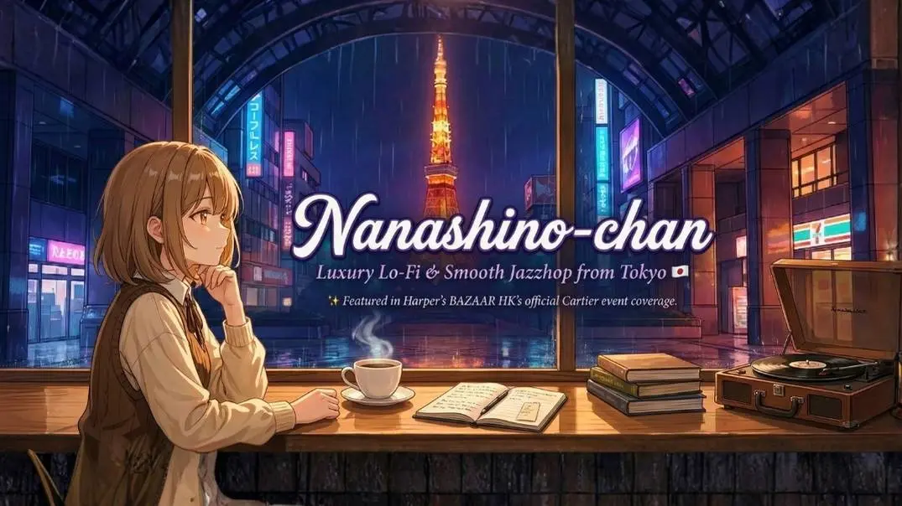

Luxury Lo-Fi & Smooth Jazzhop from Tokyo
Tokyo Lo-Fiは、東京の雰囲気にインスパイアされたリラックスしたローファイビートに焦点を当てた音楽チャンネルです。 このチャンネルは、勉強や仕事、リラックスに最適な穏やかなBGMを提供しています。
すべてのトラックは、柔らかなビートと穏やかなメロディーで落ち着いた雰囲気を作り出すために慎重に選ばれています。 そして懐かしい都会の雰囲気。
このチャンネルは、集中してリラックスし、静かに音楽を楽しみたい人のために作られています。
Tokyo Lo-Fi is a music channel inspired by the atmosphere of Tokyo nights. The music focuses on relaxing lo-fi beats, smooth jazzhop, and calm background music for study, work, and relaxation.
Every track is carefully produced with soft beats and mellow melodies to create a peaceful and nostalgic mood. The channel is made for listeners who want to focus, relax, and enjoy quiet music at night.